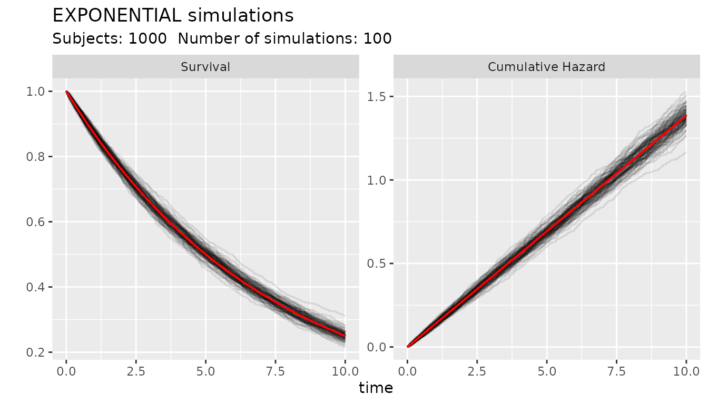

Defining and using objects of class SURVIVAL
John Aponte
Source:vignettes/example_distributions.Rmd
example_distributions.RmdIntroduction
Here we present examples on how to construct and use objects of the class SURVIVAL.
The function s_factory(s_family,...) is a function that
call the constructor of the family of distribution. Each family has it
own set of parameters. As the factories implement polymorphic behavior
according to the parameters given, it is not possible to partial match
the name of the parameters and they need to be spell correctly. If an
error on processing the parameters, the factory return a message with
the set of parameters accepted for that factory.
Once an object of a class SURVIVAL is instantiated, it has access to the following set of methods:
-
sfx(SURVIVAL, t)for the survival (proportion of the population free of events) at timet -
hfx(SURVIVAL, t)for the hazard at timet -
Cum_Hfx(SURVIVAL, t)for the cumulative hazard at timet -
InvCum_Hfx(SURVIVAL, H)for inverse of the cumulative hazardH -
rsurv(SURVIVAL, n)for the generation ofnrandom survival times from the distribution -
rsurvhr(SURVIVAL, hr)for the generation of random survival times with a hazard ratiohr
Instead of using the helper functions to call this methods, the methods can be called directly from the object as:
obj <- s_factory(s_family, ...)orobj <- s_family(...)obj$sfx(t)obj$hfx(t)obj$Cum_Hfx(t)obj$InvCum_Hfx(H)obj$rsurv(n)obj$rsurvhr(hr)
In addition, the following functions help to plot the distributions
plot(SURVIVAL)a generic S3 method that calls theplot_survival()functionplot_survival(SURVIVAL, timeto, main)which plots the survival, hazard, cumulative hazard and the inverse cumulative hazard functions from 0 totimeto. An optional title can be specified with themainparameterplot_compare(SURVIVAL1, SURVIVAL2, timeto)produce a comparison of the functions of two SURVIVAL objects. It produces a ggplot of Kaplan-Meier curve and Cumulative Hazard fornsimsimulations for the a study withsubjectsnumber of subjects, censored at timetimeto. The optional parameteralphadefines the transparency of each simulation in the graph. In addition of the simulations, the graph also present the calculated survival and cumulative hazard function of the distribution, to evaluate how good the simulations are compared with the real values.
Functions to plots to simulated proportional hazards, accelerated failure time and accelerated hazard models:
ggplot_survival_hr <- function(SURVIVAL, hr, timeto, subjects, nsim, alpha = 0.1)ggplot_survival_aft <- function(SURVIVAL, aft, timeto, subjects, nsim, alpha = 0.1)ggplot_survival_ah <- function(SURVIVAL, aft, hr, timeto, subjects, nsim, alpha = 0.1)
This functions produce Kaplan-Meier curves and Cumulative hazard
curves for nsimsimulations of the baseline distribution and
the corresponding proportional hazard, accelerate failure time censored
at timeto time.
The simulation of survival times and survival times with hazard ratios follow the methods described by Bender, Augustin, and Blettner (2003) and Leemis (1987)
Exponential Distribution
The canonical parameter of the exponential distribution is called
lambda and represents a constant hazard over time. The
units of lambda define the units of time for a
distribution. For example if lambda = 3 is used to
represent the probability of having 3 events in 1 year, the survival
function sfx(SURVIVAL, 1) calculate the proportion of the
population free of events at 1 year.
The distribution can be defined also with the proportion of the
population free of events (surv) at time t or
the proportion of the population with events (fail) at time
t
# Instanciate an object of class SURVIVAL with the Exponential distribution
obj1 <- s_factory(s_exponential, lambda = 3)
obj1
#> SURVIVAL object
#> Distribution: EXPONENTIAL
#> lambda : 3
# Survival at time 1
sfx(obj1,1)
#> [1] 0.04978707
# Hazard at time 1
hfx(obj1,1)
#> [1] 3
# Cumulative hazard at time 1
Cum_Hfx(obj1,1)
#> [1] 3
# Inverse of the cumulative hazard 0.6
invCum_Hfx(obj1, 0.6)
#> [1] 0.2
# Plot of the distribution
plot(obj1)The next set of examples show how to define an exponential
distribution based on the surviving or failing proportion at time
t
obj2 <- s_exponential(surv = 0.8, t = 1)
obj2
#> SURVIVAL object
#> Distribution: EXPONENTIAL
#> lambda : 0.2231436
obj3 <- s_exponential(fail = 0.2, t = 1)
obj3
#> SURVIVAL object
#> Distribution: EXPONENTIAL
#> lambda : 0.2231436The following code shows how to make 100 simulations of 1000 subjects with an object of the SURVIVAL class. The red line is the value from the distribution.
obj4 <- s_exponential(surv = 0.25, t = 10)
ggplot_survival_random(obj4, timeto=10, subjects=1000, nsim=100, alpha = 0.1)
Weibull distribution
The canonical parameters of the Weibull distribution are
scale and shape. The scale carry
on the information about the time units. The scale
parameter can be derived from the proportion surviving or failing at a
given time but the shape needs to be provided by the user.
Both scale and shape needs to be numbers
bigger than 0. A value of shape equal to 1 is similar to an
exponential distribution with lambda parameter equal to the
scale. If the shape is bigger than 1 the hazard is
increasing which means more events at the end of follow up, and if
between 0 and 1 is decreasing which translate to more events at the
beginning of the time at risk.
The following code shows the effect of the shape parameter on distributions with the same scale.
wobj1 <- s_weibull(scale = 3, shape = 0.5)
wobj2 <- s_weibull(scale = 3, shape = 1)
wobj3 <- s_weibull(scale = 3, shape = 1.5)
par(mfrow=c(2,3))
plot(
wobj1$sfx,
from = 0,
to = 1,
main = "Weibull with shape 0.5",
xlab = "Time",
ylab = "Proportion without events",
ylim = c(0,1))
plot(
wobj2$sfx,
from = 0,
to = 1,
main = "Weibull with shape 1",
xlab = "Time",
ylab = "Proportion without events",
ylim = c(0,1))
plot(
wobj3$sfx,
from = 0,
to = 1,
main = "Weibull with shape 1.5",
xlab = "Time",
ylab = "Proportion without events",
ylim = c(0,1))
plot(
wobj1$hfx,
from = 0,
to = 1,
xlab = "Time",
ylab = "hazard")
plot(
wobj2$hfx,
from = 0,
to = 1,
xlab = "Time",
ylab = "hazard")
plot(
wobj3$hfx,
from = 0,
to = 1,
xlab = "Time",
ylab = "hazard")Gompertz distribution
The Gompertz distribution have two canonical parameters, the
scale and the shape. The scale
needs to be a number higher than zero, and represents the hazard at time
0. The shape can be any real number. Negative
shape produce a decreasing hazard. Positive
shape produces a increasing hazard. If the
shape is zero, the distribution is reduced to an
exponential distribution, but this is not implemented in this package.
Instead an error is produced.
Similarly to the other distributions, the scale can be
derived from the survival or failing proportion at a given time, but the
shape parameter needs to be provided.
The following graph shows the effect of the scale
parameter on the Gompertz distribution
# define a function to generate and plot Gompertz distributions
plot_sfx_gompertz<- function(shape, scale = 3, timeto = 1){
plot(
s_gompertz(shape = shape, scale = scale)$sfx,
from = 0,
to = timeto,
main = paste("Shape: ", shape),
xlab = "Time",
ylab = "Proportion without events",
ylim = c(0,1)
)
}
plot_hfx_gompertz<- function(shape, scale = 3, timeto = 1){
plot(
s_gompertz(shape = shape, scale = scale)$hfx,
from = 0,
to = timeto,
xlab = "Time",
ylab = "hazard",
ylim = c(2,4)
)
}
par(mfrow=c(2,4))
plot_sfx_gompertz(shape = -0.25)
plot_sfx_gompertz(shape = -0.10)
plot_sfx_gompertz(shape = 0.10)
plot_sfx_gompertz(shape = 0.25)
plot_hfx_gompertz(shape = -0.25)
plot_hfx_gompertz(shape = -0.10)
plot_hfx_gompertz(shape = 0.10)
plot_hfx_gompertz(shape = 0.25)Piecewise Exponential distribution
The Piecewise Exponential distribution is a very flexible
distribution where the hazard is treated as constant until a breaks
occurs and the value of a new hazard is used. The class implements two
parameters the breaks that defines the breaks points and
the hazards that define the hazard used until the break
point time. The factory function will provide a warning if the last
break is not Inf as otherwise the distribution is not
completely defined.
The parameters
break = c(1,2,3,Inf), hazards = c(0.1,3,4,3) implements a
distribution where the hazard is 0.1 until time 1, 3 from time 1 until
time 2, a hazard of 4 until time 3 and from that point a hazard of 3
again.
The distribution can be also defined with the proportion surviving or
failing, breaks and segments. In this case the
segments are scaled to create hazards that results in a
specified proportion surviving or failing at the last not Inf break
point. For example the parameters
surv = 0.2, breaks = c(1,2,3,Inf), segments = c(1, 2, 3, 1)
will scale the segments to hazards in way that at time = 3 the surviving
proportion is 0.2. See the following example
pobj <- s_piecewise(surv = 0.2, breaks = c(1,2,3,Inf), segments = c(1,2,3,1))
pobj
#> SURVIVAL object
#> Distribution: PIECEWISE
#> breaks : 1 2 3 Inf
#> hazards : 0.2682397 0.5364793 0.804719 0.2682397
pobj$sfx(3)
#> [1] 0.2
plot_survival(pobj, timeto = 3)Log-logistic distribution
The Log-logistic distribution have two canonical parameters, the scale and the shape parameters.
pobj <- s_loglogistic(scale = 3, shape = 1.5)
plot_survival(pobj, timeto = 3)Log-Normal distribution
The Log-normal distribution have two canonical parameters. The shape parameter that defined the median value of the distribution, and the shape parameter that represents the standard deviation of the distribution in the log scale.
pobj <- s_lognormal(scale = 1.5, shape = 0.8)
plot_survival(pobj, timeto = 3)
Comparison of SURVIVAL objects
The function compare_survival() can produce a graphic
comparison of two SURVIVAL objects. The objects no need to be from the
same distribution family.
cobj1<- s_exponential(lambda = 3)
cobj2<- s_gompertz(scale = 3, shape = 0.4)
compare_survival(cobj1, cobj2, timeto = 2)